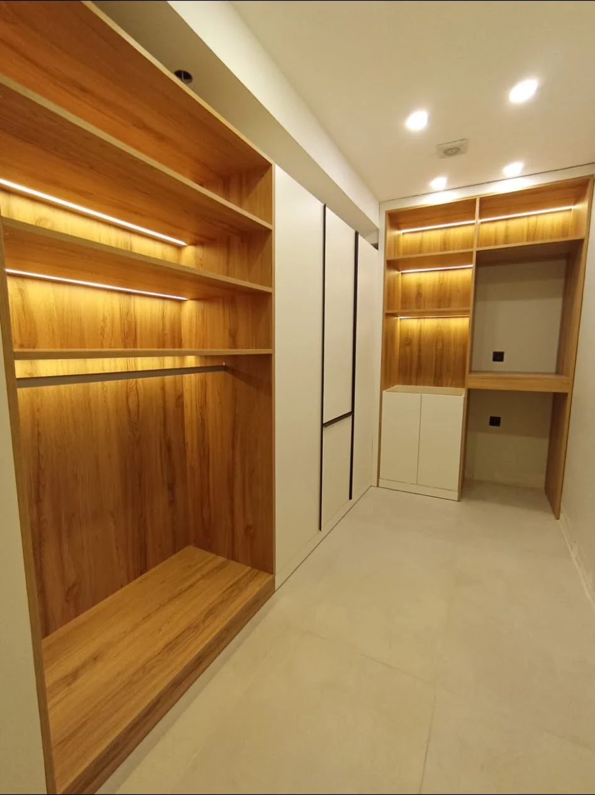
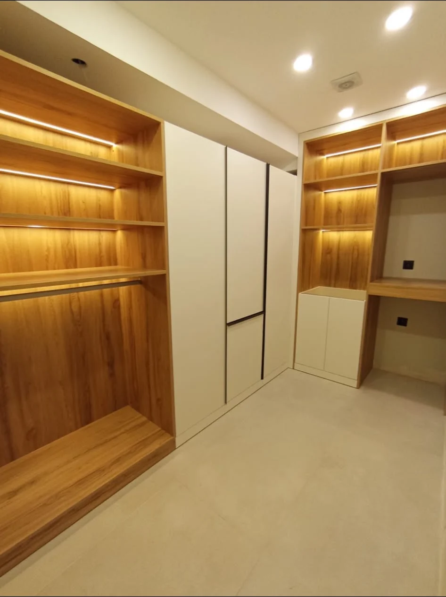

Textiles
[Tekstil 01]
Yer tutucu içerik
Bu sayfadaki başlık ve görseller geçicidir. Görseller marka paletinden üretilmiş
düz panellerdir, Corniche'in fotoğrafları değildir. Gerçek proje adları ve
fotoğrafları geldiğinde değişecektir.

